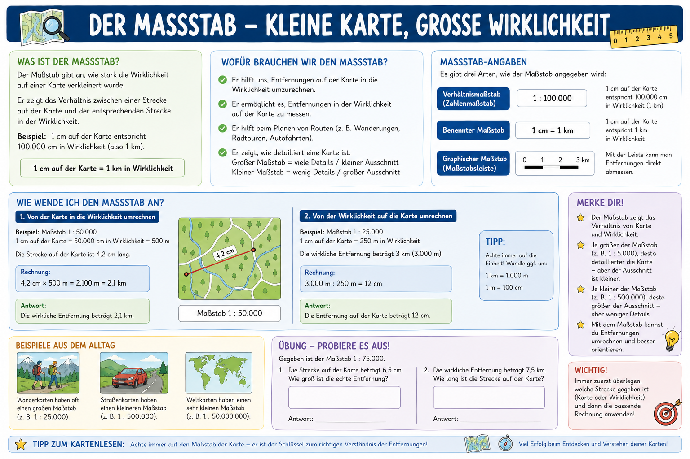

Erdkunde Klasse 5
Massstab in Karten
Dieses Modul fuehrt dich mit einem klaren roten Faden vom Verstehen bis zur sicheren Anwendung: Was bedeutet 1:n, wie rechnest du in beide Richtungen und wie waehlst du den passenden Massstab?
1. Verstehen
2. Rechnen
3. Anwenden
4. Pruefen
Lernplakate
Nutze die beiden Grafiken als Uebersicht. Sie zeigen dasselbe Thema aus zwei Perspektiven.

Massstab-Werkstatt (interaktiv)
Waehle die Richtung und rechne mit dem Werkzeug Schritt fuer Schritt.
Grosser oder kleiner Massstab?
Schiebe den Regler und beobachte, wie sich Ausschnitt und Detailgrad veraendern.
Flaechenidee (10 cm Kartenbreite)
Training A: Grundwissen
Aufgabe wird geladen...
Training B: Rechenaufgaben
Aufgabe wird geladen...
Training C: Passender Massstab
Aufgabe wird geladen...
Abschlusstest
10 gemischte Fragen mit eigenem Pruefungspool und direktem Feedback.
Punkte: 0 / 10
Test noch nicht gestartet.